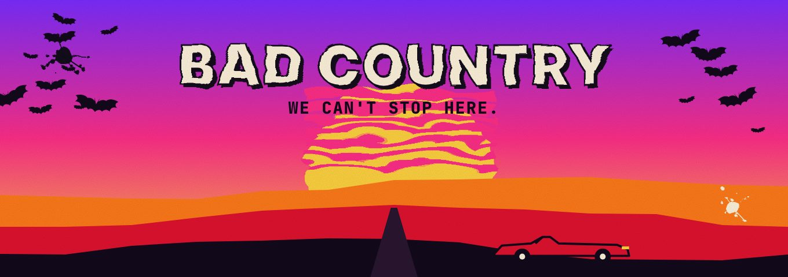
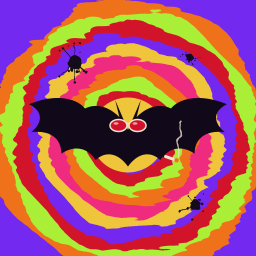

<title>Checkpoint Charlie</title>
<meta name="claude:viewport-fit-sides" content="cover">
<link rel="preconnect" href="https://fonts.googleapis.com">
<link rel="preconnect" href="https://fonts.gstatic.com" crossorigin>
<link rel="stylesheet" href="https://fonts.googleapis.com/css2?family=Rubik+Wet+Paint&family=Special+Elite&family=Archivo:wght@400;600;800&display=swap">
<style>
/* Layout: a neon motel-sign hero over a breathing canvas, then a typewritten command ledger. Single dark world, on purpose. */
:root {
  --night: #140b1f;      /* desert at 3 a.m. */
  --night-2: #1f1230;
  --bone: #fff3dc;       /* paper, typewriter ribbon */
  --dust: #c9b8a6;
  --neon: #ff2e88;
  --yolk: #ffd23f;
  --acid: #b6ff3b;
  --blood: #e0122f;
  --ether: #3fd6ff;
  --line: rgba(255, 243, 220, 0.14);
  --f-display: "Rubik Wet Paint", "Impact", system-ui, sans-serif;
  --f-type: "Special Elite", "Courier New", ui-monospace, monospace;
  --f-body: "Archivo", "Helvetica Neue", Arial, sans-serif;
  color-scheme: dark;
}
* { box-sizing: border-box; }
body { background: var(--night); color: var(--bone); font-family: var(--f-body); font-size: 16px; line-height: 1.55; }
a { color: var(--yolk); }
:focus-visible { outline: 3px dashed var(--acid); outline-offset: 3px; }
.wrap { max-width: 1120px; margin: 0 auto; padding-left: max(16px, env(safe-area-inset-left, 0px)); padding-right: max(16px, env(safe-area-inset-right, 0px)); }

/* ── Hero ───────────────────────────────── */
.hero { position: relative; overflow: hidden; margin-top: calc(-1 * env(safe-area-inset-top, 0px)); padding-top: env(safe-area-inset-top, 0px); border-bottom: 4px solid var(--night); }
.hero canvas { position: absolute; inset: 0; width: 100%; height: 100%; display: block; }
.hero .banner { position: absolute; inset: 0; width: 100%; height: 100%; object-fit: cover; opacity: 0.35; mix-blend-mode: screen; }
.hero .wrap { position: relative; padding-block: 56px 48px; display: grid; grid-template-columns: auto 1fr; gap: 28px; align-items: center; }
.avatar { width: 148px; height: 148px; border-radius: 50%; border: 6px solid var(--night); box-shadow: 0 0 0 4px var(--yolk), 10px 10px 0 4px var(--night); transform: rotate(-6deg); }
.hero h1 { margin: 0; font-family: var(--f-display); font-weight: 400; font-size: clamp(2.6rem, 8vw, 5.6rem); line-height: 0.95; color: var(--bone); text-shadow: 5px 5px 0 var(--night), 0 0 22px rgba(255, 46, 136, 0.8); text-wrap: balance; }
.tag { display: inline-block; margin-top: 14px; font-family: var(--f-type); font-size: 1.15rem; background: var(--night); color: var(--yolk); padding: 6px 12px; transform: rotate(-1.5deg); }
.chips { display: flex; flex-wrap: wrap; gap: 8px; margin-top: 16px; }
.chip { font-family: var(--f-type); font-size: 0.85rem; letter-spacing: 0.04em; padding: 4px 10px; border: 2px solid var(--night); background: var(--bone); color: var(--night); }
.chip.hot { background: var(--blood); color: var(--bone); }
.motion-toggle { position: absolute; right: max(12px, env(safe-area-inset-right, 0px)); top: calc(12px + env(safe-area-inset-top, 0px)); font-family: var(--f-type); font-size: 0.8rem; background: var(--night); color: var(--bone); border: 2px solid var(--bone); padding: 4px 10px; cursor: pointer; z-index: 2; }

/* ── Sections ───────────────────────────── */
section { padding-block: 44px; }
h2 { font-family: var(--f-display); font-weight: 400; font-size: clamp(1.9rem, 4.5vw, 2.8rem); margin: 0 0 6px; color: var(--yolk); line-height: 1; }
.lede { margin: 0 0 24px; max-width: 62ch; color: var(--dust); }

/* Checkpoint steps: a real sequence, so they're numbered. */
.steps { list-style: none; margin: 0; padding: 0; display: grid; grid-template-columns: repeat(auto-fit, minmax(230px, 1fr)); gap: 14px; counter-reset: s; }
.steps li { counter-increment: s; position: relative; padding: 18px 18px 18px 64px; background: var(--night-2); border: 1px solid var(--line); min-width: 0; }
.steps li::before { content: counter(s); position: absolute; left: 14px; top: 12px; font-family: var(--f-display); font-size: 2.4rem; color: var(--neon); line-height: 1; }
.steps b { display: block; font-family: var(--f-type); font-weight: 400; font-size: 1.05rem; color: var(--bone); }
.steps span { color: var(--dust); font-size: 0.95rem; }

/* ── Command ledger ─────────────────────── */
.tools { display: flex; flex-wrap: wrap; gap: 10px; align-items: center; margin-bottom: 18px; }
.search { flex: 1 1 260px; min-width: 0; font: 1rem var(--f-type); background: var(--bone); color: var(--night); border: 3px solid var(--night); box-shadow: 4px 4px 0 var(--neon); padding: 10px 12px; }
.filter { font: 0.9rem var(--f-type); background: transparent; color: var(--bone); border: 2px solid var(--line); padding: 7px 12px; cursor: pointer; }
.filter[aria-pressed="true"] { background: var(--yolk); color: var(--night); border-color: var(--yolk); }
.count { font-family: var(--f-type); color: var(--dust); font-size: 0.9rem; font-variant-numeric: tabular-nums; }

.ledger { display: grid; grid-template-columns: repeat(auto-fill, minmax(300px, 1fr)); gap: 14px; }
.cmd { display: grid; grid-template-rows: auto 1fr auto; gap: 8px; background: var(--bone); color: var(--night); padding: 16px 16px 12px; border-left: 8px solid var(--c, var(--neon)); min-width: 0; }
.cmd header { display: flex; justify-content: space-between; align-items: baseline; gap: 10px; }
.cmd code { font-family: var(--f-type); font-size: 1.2rem; overflow-wrap: anywhere; }
.who { font: 600 0.68rem var(--f-body); letter-spacing: 0.12em; text-transform: uppercase; white-space: nowrap; padding: 2px 7px; background: var(--night); color: var(--bone); }
.who.staff { background: var(--blood); }
.cmd p { margin: 0; font-size: 0.95rem; }
.cmd footer { display: flex; justify-content: space-between; align-items: center; gap: 8px; border-top: 1px dashed rgba(20, 11, 31, 0.3); padding-top: 8px; }
.usage { font-family: var(--f-type); font-size: 0.85rem; color: #5b4a63; overflow-wrap: anywhere; min-width: 0; }
.copy { font: 600 0.75rem var(--f-body); letter-spacing: 0.08em; text-transform: uppercase; background: var(--night); color: var(--bone); border: 0; padding: 6px 10px; cursor: pointer; flex: none; }
.copy.done { background: var(--acid); color: var(--night); }
.empty { font-family: var(--f-type); color: var(--dust); padding: 24px 0; }

/* ── Emoji + status ─────────────────────── */
.split { display: grid; grid-template-columns: 1.2fr 1fr; gap: 28px; }
.split > div { min-width: 0; }
.emojis { display: grid; grid-template-columns: repeat(auto-fill, minmax(92px, 1fr)); gap: 10px; }
.emojis figure { margin: 0; background: var(--night-2); border: 1px solid var(--line); padding: 10px 6px 8px; text-align: center; }
.emojis img { width: 56px; height: 56px; display: block; margin: 0 auto 6px; }
.emojis figcaption { font-family: var(--f-type); font-size: 0.72rem; color: var(--dust); overflow-wrap: anywhere; }
.status { margin: 0; padding: 0; list-style: none; display: grid; gap: 6px; }
.status li { font-family: var(--f-type); padding: 8px 12px; background: var(--night-2); border-left: 4px solid var(--ether); font-size: 0.95rem; }
.status li em { font-style: normal; color: var(--ether); font-family: var(--f-body); font-size: 0.72rem; letter-spacing: 0.12em; text-transform: uppercase; margin-right: 8px; }
.status li.on { border-left-color: var(--acid); background: #2a1a3f; }

footer.site { padding-block: 36px 48px; border-top: 1px solid var(--line); color: var(--dust); font-size: 0.9rem; }
footer.site p { margin: 0 0 6px; max-width: 70ch; }

@media (max-width: 720px) {
  .hero .wrap { grid-template-columns: 1fr; padding-block: 48px 36px; }
  .avatar { width: 108px; height: 108px; }
  .split { grid-template-columns: 1fr; }
}
@media (prefers-reduced-motion: reduce) { .motion-toggle { display: none; } }
</style>

<header class="hero">
  <canvas id="trip" aria-hidden="true"></canvas>
  
  <button class="motion-toggle" id="motion" type="button" aria-pressed="false">Stop the swirl</button>
  <div class="wrap">
    
    <div>
      <h1>Checkpoint Charlie</h1>
      <span class="tag">Keeper of the gate. We can't stop here.</span>
      <div class="chips">
        <span class="chip hot">21+ only</span>
        <span class="chip">Bad Country</span>
        <span class="chip" id="cmdcount">— commands</span>
        <span class="chip">Daily QOTD 9pm ET</span>
      </div>
    </div>
  </div>
</header>

<main>
  <section class="wrap" id="gate">
    <h2>Getting through the checkpoint</h2>
    <p class="lede">New arrivals land as a <b>🦇 Drifter</b> and can see only the welcome channels. Do these three things and Charlie stamps your papers. You become a <b>🌵 Citizen of Bad Country</b> on the spot, no waiting for a mod.</p>
    <ol class="steps">
      <li><b>Sign the rules</b><span>Read The-Fine-Print and press “I'm 21+ and I accept the rules.”</span></li>
      <li><b>File your papers</b><span>In Who-Are-You, press “Fill out my papers” and answer five questions. You get your own welcome thread.</span></li>
      <li><b>Pick your roles</b><span>In Roles, choose your DM status. That's the one required pick. Identity, vices, region, NSFW and pings are optional.</span></li>
    </ol>
  </section>

  <section class="wrap" id="commands">
    <h2>Command center</h2>
    <p class="lede">Type <code>/</code> in any channel to use these. Tap <b>Copy</b> to grab one.</p>
    <div class="tools">
      <label for="q" class="sr" hidden>Search commands</label>
      <input id="q" class="search" type="search" placeholder="Search: race, trivia, confess…" autocomplete="off">
      <div class="tools" role="group" aria-label="Filter by category" id="filters" style="margin:0"></div>
      <span class="count" id="shown" aria-live="polite"></span>
    </div>
    <div class="ledger" id="ledger"></div>
    <p class="empty" id="empty" hidden>Nothing matches that. The bats looked everywhere.</p>
  </section>

  <section class="wrap" id="extras">
    <div class="split">
      <div>
        <h2>The emoji kit</h2>
        <p class="lede">Charlie's own emoji, drawn for Bad Country.</p>
        <div class="emojis" id="emojis"></div>
      </div>
      <div>
        <h2>What Charlie's up to</h2>
        <p class="lede">His Discord status rotates every few minutes through these.</p>
        <ul class="status" id="status"></ul>
      </div>
    </div>
  </section>
</main>

<footer class="site">
  <div class="wrap">
    <p><b>Checkpoint Charlie</b> is the private gatekeeper bot of the Bad Country Discord server. It's a 21+ community. Members confirm their own age, and staff act on anything that looks off.</p>
    <p>Confessions are anonymous to members but visible to staff, so nobody uses the booth to hurt anyone. Raoul is an AI character written in a gonzo style. He isn't Hunter S. Thompson and doesn't speak for him.</p>
    <p>Hunter S. Thompson facts and trivia are drawn from his published record. All art here is original to Bad Country.</p>
  </div>
</footer>

<script>
const CATS = {
  arcade: { label: 'Gonzo Arcade', color: 'var(--neon)' },
  raoul: { label: 'Raoul & the Library', color: 'var(--ether)' },
  community: { label: 'Community', color: 'var(--acid)' },
  staff: { label: 'Staff', color: 'var(--blood)' },
};
const COMMANDS = [
  ['mint400', 'arcade', 'Start a desert race. Anyone can hit “Strap in” for 45 seconds, then it runs lap by lap. Winner gets +3 Gonzo Points.', '/mint400', 'Everyone'],
  ['trivia', 'arcade', 'A true Hunter S. Thompson question with four answers. 30 seconds, one guess each. Right answers get +1 point.', '/trivia', 'Everyone'],
  ['road-trip', 'arcade', 'Choose-your-own-disaster drive from Barstow to Vegas and back. Four legs, button choices, points at the end.', '/road-trip', 'Everyone'],
  ['leaderboard', 'arcade', 'The Gonzo Points standings: top 10 racers, trivia heads and road-trippers.', '/leaderboard', 'Everyone'],
  ['bat-country', 'arcade', 'A hallucination hits the channel. Lizards at the bar, breathing carpets, chanting slot machines.', '/bat-country', 'Everyone'],
  ['trunk', 'arcade', 'Pop the trunk of the Red Shark and see what you\'re hauling today.', '/trunk', 'Everyone'],
  ['gonzo-name', 'arcade', 'Your gonzo alter ego, like Dr. Velvet Barstow, Attorney at Large. It never changes for you.', '/gonzo-name [who]', 'Everyone'],
  ['attorney', 'arcade', 'Ask your attorney anything. The advice is terrible. Do not follow it.', '/attorney question', 'Everyone'],
  ['fear-meter', 'arcade', 'Today\'s fear & loathing reading for you or anyone, from “possibly a narc” to MAXIMUM GONZO.', '/fear-meter [who]', 'Everyone'],
  ['dispatch', 'arcade', 'File a fake gonzo news report about someone. “Spotted singing to the ice machine at 4:12 a.m.”', '/dispatch who', 'Everyone'],
  ['raoul', 'raoul', 'Talk to Raoul, the AI gonzo correspondent. He remembers the last few messages in the channel.', '/raoul message', 'Everyone'],
  ['journal', 'raoul', 'A page from Raoul\'s field journal. Give him a topic or let the desert decide.', '/journal [topic]', 'Everyone'],
  ['library', 'raoul', 'Hunter S. Thompson\'s books, from Hell\'s Angels (1967) to Hey Rube (2004), with what each one is.', '/library', 'Everyone'],
  ['art', 'raoul', 'An original Bad Country gonzo postcard: swirls, bats, ink and the Red Shark.', '/art', 'Everyone'],
  ['gonzo', 'raoul', 'One true, documented Hunter S. Thompson fact. No repeats until you\'ve seen them all.', '/gonzo', 'Everyone'],
  ['confess', 'community', 'Post an anonymous confession to the confession booth with its own reply thread. Members can\'t see who sent it; staff can.', '/confess confession', 'Citizens'],
  ['qotd', 'staff', 'Post a Dispatch from the Desert question now, random or your own. One goes out every night at 9pm ET by itself.', '/qotd [question]', 'Staff'],
  ['checkpoint status', 'staff', 'See someone\'s checkpoint progress, stated age and any flags.', '/checkpoint status user', 'Staff'],
  ['checkpoint pass', 'staff', 'Wave someone straight through to Citizen.', '/checkpoint pass user', 'Staff'],
  ['checkpoint reset', 'staff', 'Send someone back to Drifter. They re-sign the rules.', '/checkpoint reset user', 'Staff'],
  ['checkpoint panels', 'staff', 'Refresh the welcome, rules, intro and role panels.', '/checkpoint panels', 'Staff'],
];
const EMOJI = ['bat', 'redshark', 'lizard', 'cactus', 'grapefruit', 'typewriter', 'spiral', 'attorney', 'mint400', 'gonzo', 'ether', 'wcsh'];
const STATUS = [
  ['Custom', "🦇 We can't stop here. This is Bad Country."], ['Watching', 'the checkpoint for narcs'], ['Listening to', 'the ice machine scream'],
  ['Playing', 'the Mint 400 • /mint400'], ['Custom', '🦈 Driving the Red Shark at 110 mph'], ['Watching', 'the carpet breathe'],
  ['Custom', '📜 Checking papers since 1971'], ['Listening to', 'your attorney • /attorney'], ['Custom', '🍊 Two dozen grapefruit in the trunk'],
  ['Competing in', 'Gonzo trivia • /trivia'], ['Custom', '🌵 Buy the ticket, take the ride'], ['Watching', 'bats circle the Strip'],
];

const $ = (s) => document.querySelector(s);
const esc = (t) => t.replace(/[&<>"]/g, (c) => ({ '&': '&amp;', '<': '&lt;', '>': '&gt;', '"': '&quot;' }[c]));
let active = 'all';

$('#cmdcount').textContent = `${COMMANDS.length} commands`;

const filters = $('#filters');
[['all', 'All']].concat(Object.entries(CATS).map(([k, v]) => [k, v.label])).forEach(([k, label]) => {
  const b = document.createElement('button');
  b.type = 'button'; b.className = 'filter'; b.id = 'f-' + k; b.textContent = label;
  b.setAttribute('aria-pressed', String(k === active));
  b.onclick = () => { active = k; filters.querySelectorAll('.filter').forEach((x) => x.setAttribute('aria-pressed', String(x === b))); render(); };
  filters.appendChild(b);
});

function render() {
  const q = $('#q').value.trim().toLowerCase();
  const list = COMMANDS.filter(([n, c, d]) => (active === 'all' || c === active) && (!q || (n + ' ' + d + ' ' + CATS[c].label).toLowerCase().includes(q)));
  $('#ledger').innerHTML = list.map(([n, c, d, u, who]) => `
    <article class="cmd" style="--c:${CATS[c].color}">
      <header><code>/${esc(n)}</code><span class="who ${who === 'Staff' ? 'staff' : ''}">${who}</span></header>
      <p>${esc(d)}</p>
      <footer><span class="usage">${esc(u)}</span><button class="copy" type="button" data-cmd="/${esc(n)}">Copy</button></footer>
    </article>`).join('');
  $('#empty').hidden = list.length > 0;
  $('#shown').textContent = `${list.length} of ${COMMANDS.length}`;
}
$('#q').addEventListener('input', render);
$('#ledger').addEventListener('click', async (e) => {
  const b = e.target.closest('.copy'); if (!b) return;
  const text = b.dataset.cmd;
  try { await navigator.clipboard.writeText(text); b.textContent = 'Copied'; b.classList.add('done'); }
  catch { const r = document.createRange(); r.selectNodeContents(b.closest('.cmd').querySelector('code')); const s = getSelection(); s.removeAllRanges(); s.addRange(r); b.textContent = 'Selected'; }
  setTimeout(() => { b.textContent = 'Copy'; b.classList.remove('done'); }, 1400);
});
render();

$('#emojis').innerHTML = EMOJI.map((n) => `<figure><figcaption>:bc_${n}:</figcaption></figure>`).join('');
$('#status').innerHTML = STATUS.map(([t, s], i) => `<li${i === 0 ? ' class="on"' : ''}><em>${t}</em>${esc(s)}</li>`).join('');
let si = 0;
setInterval(() => { const items = document.querySelectorAll('#status li'); items[si].classList.remove('on'); si = (si + 1) % items.length; items[si].classList.add('on'); }, 2500);

// ── The breathing desert (canvas) ──
const cv = $('#trip'), ctx = cv.getContext('2d');
const reduce = matchMedia('(prefers-reduced-motion: reduce)').matches;
let running = !reduce, t = 0;
const COLORS = ['#ff2e88', '#ffd23f', '#7b2cff', '#ff7a1a', '#b6ff3b', '#3fd6ff', '#e0122f'];
function size() { const r = cv.getBoundingClientRect(); const d = Math.min(2, devicePixelRatio || 1); cv.width = r.width * d; cv.height = r.height * d; ctx.setTransform(d, 0, 0, d, 0, 0); }
function draw() {
  const w = cv.clientWidth, h = cv.clientHeight, cx = w * 0.72, cy = h * 0.55;
  const step = 34, n = Math.ceil(Math.hypot(w, h) / step) + 2;
  for (let i = n; i > 0; i--) {
    ctx.beginPath();
    const R = i * step - (t * 18) % step;
    for (let a = 0; a <= Math.PI * 2 + 0.01; a += 0.08) {
      const rr = R + Math.sin(a * 5 + t + i * 0.4) * 9 + Math.cos(a * 3 - t * 0.7) * 6;
      const x = cx + Math.cos(a) * rr, y = cy + Math.sin(a) * rr * 0.8;
      a === 0 ? ctx.moveTo(x, y) : ctx.lineTo(x, y);
    }
    ctx.fillStyle = COLORS[(i + Math.floor(t * 18 / step)) % COLORS.length];
    ctx.fill();
  }
}
function loop() { if (!running) return; t += 0.012; draw(); requestAnimationFrame(loop); }
size(); draw(); if (running) loop();
addEventListener('resize', () => { size(); draw(); });
const mb = $('#motion');
mb.onclick = () => { running = !running; mb.textContent = running ? 'Stop the swirl' : 'Start the swirl'; mb.setAttribute('aria-pressed', String(!running)); if (running) loop(); };
if (!running) { mb.textContent = 'Start the swirl'; }
</script>
